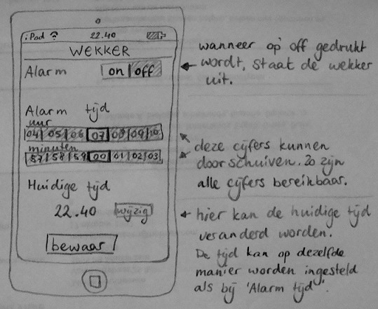

De opdracht was om een design te geven aan een wekker. De wekker moest aan en uit gezet kunnen worden, de alarmtijd moest aangepast kunnen worden en ook de huidige tijd moest kunnen worden veranderd. Hieronder staat een getekend design van de wekker

Hierna moest de wekker getest worden door een mede student. De wekker werd getest doordat de student een aantal taken uit moest voeren. Staat het alarm aan om me te wekken?
Ja, de wekker staat aan.
Zet het alarm op de tijd waarop je gewekt wilt worden.
Ik kan het uur aanklikken door met mijn vinger op het juiste cijfer te klikken. Dat is nu om zeven uur. De minuten kan ik op dezelfde manier veranderen. Verander de huidige tijd met een uur, omdat de zomertijd ingaat. Ik klik op 'wijzig'. Nu kan ik de tijd op dezelfde manier instellen als dat ik de wekker heb ingesteld.